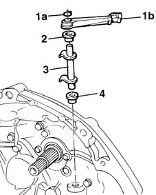

1820A26 thrust bearing linkage - r + r with gearbox removed
- Path
- Procedures > 18 CLUTCH > 1820 CLUTCH RELEASE CONTROLS > 1820A clutch release mechanical control > 1820A26 thrust bearing linkage - r + r with gearbox removed
- Kind
- repair procedure (removal / refitting; the operation number is the code)
- Applies to
- all engines; all production periods
- Interactive page
- https://sloeber94.github.io/elrnDB-fMltpl/en/#/2891527
Applies to: all engines; all production periods
 Removing
Removing
 Refitting
Refitting1. Remove the circlip (1a) retaining the clutch release lever (1b) and remove the lever.
2. Remove the top bush.
3. Withdraw the fork control shaft.
4. Remove the bottom bush.

Applies to: all engines; all production periods
Refitting
RemovingCheck the condition of the removed components.
Replace the bushes, if there is too much play on the fork shaft.
Refit the bottom bush.
Refit the fork control shaft.
Refit the top bush.
Position the clutch release lever and secure it to the fork shaft using the clip.